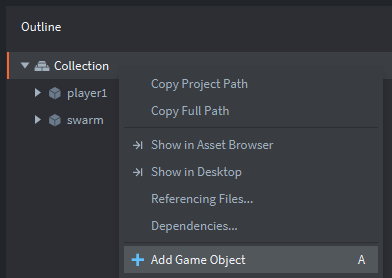
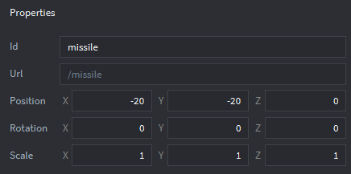
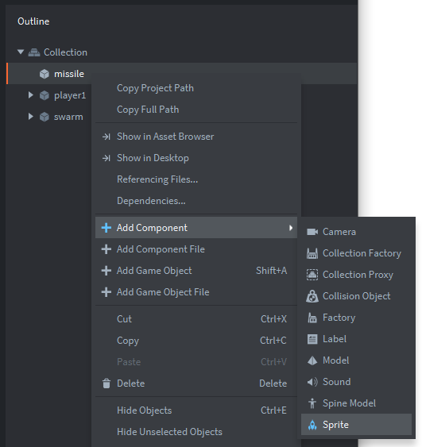
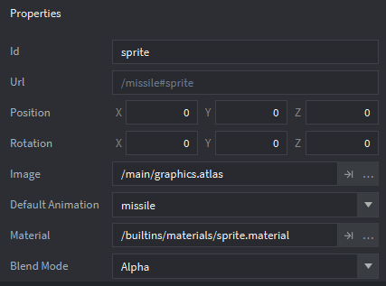

Tutorials for 2D games projects
Landers | Firing at the invaders.
In this stage we have a decision to make about the development of the game. In the classic space invaders the player could only fire one missile at a time. Therefore we only need one game object that we can create off-screen and then move to the correct position when it is fired. This simplifies the development. If we wanted the player to be able to fire a variable number of missiles at the same time we would need to use a factory to spawn the game objects instead. We have covered both methods in the tutorials so it is really a game design decision. To increase the difficulty we'll only allow the player to have one missile on the screen at a time.
- In the assets panel, in the 'main' folder, double click the 'main.collection' file.
- Create a new game object in the collection with the Id, 'missile'. Set the X and Y position of the object so it is off the visible screen. Give it a sprite with the missile animation group.
Step-by-step guide
- In the outline panel, right click, 'Collection' and select, 'Add Game Object'.

- In the properties panel, change the 'Id' property to be 'missile'.
- In the properties panel, change the X position to be -20 and the Y position to be -20. These values don't matter providing they are off the screen so you can't see the missile until it is fired.

- In the outline panel, right click, 'missile' and select, 'Add Component', 'Sprite'.

- In the properties panel, change the 'Image' property to be, '/main/graphics.atlas'.
- In the properties panel, change the 'Default Animation' to be, 'missile'.

- In the outline panel, right click, 'Collection' and select, 'Add Game Object'.
- In the assets panel, in the 'main' folder, double click the 'player.script' file.
- Add some additional code to the on_input function. Be careful not to over-write the code you already have for moving the player ship! Just add this code before the 'end' statement for the function.
-- Fire if Enter is pressed
if action_id == fire and action.pressed and self.can_fire == true then
local pos = go.get_position()
local missile_pos = go.get_position(missile)
missile_pos.x = pos.x
missile_pos.y = pos.y + 10
go.set_position(missile_pos,missile)
self.can_fire = false
endaction.pressed means the player has to press the key and release it again before triggering a new fire action. This prevents the player holding down the fire button.
If the action matches the pre-hashed fire trigger and the ship attribute can_fire is true then we fetch the missile position and set it to be in the middle of the player ship. Remember all co-ordinates are measured from the middle of a game object. We'll add 10 pixels to the y position as the gun is at the front of the ship.
Once the ship has fired it cannot fire again until the missile hits an invader or goes off the screen.
- Run the program by pressing F5 or choosing, 'Debug', 'Start / Attach' from the menu bar. When you press Enter a missile is placed on the player ship.

We could change the Z property of the missile to -1 if we wanted it to render under the ship instead of on top. The Z property determines the draw order or layering of the game objects on the screen. The lowest value being rendered first, but for our game it's not essential. Our gun turret is on top of the ship!
Next we want to move the missile in each frame.
- In the assets panel, create a new script in the 'main' folder named, 'missile'.
Step-by-step guide
- In the assets panel, right click, 'main' and select, 'New...', 'Script'.
- Enter missile in the 'Name' property and click, 'Create Script'.
- Change the code in the missile script to move the missile.
local hit = hash("collision_response")
function init(self)
-- speed of the missile
self.speed = 400
end
function update(self, dt)
-- if the missile has been fired, move it
local pos = go.get_position()
if pos.x > 0 then
pos.y = pos.y + self.speed * dt
-- if the missile is off the screen, reload it
if pos.y > 640 then
pos.x = -20
msg.post("player1", "reload_missile")
end
go.set_position(pos)
end
end
function on_message(self, message_id, message, sender)
-- id the missile has hit something, despawn it off-screen
if message_id == hit then
local pos = go.get_position()
pos.x = -20
go.set_position(pos)
msg.post("player1", "reload_missile")
end
endThe collision response from a missile hitting another object is pre-hashed for use later.
When the missile is spawned its speed is set to 400.
If the missile has been fired, its x position is greater than zero. If this is the case then it is moved by its speed and delta time.
If the position of the missile is off the top of the screen its position is set to be less than zero so we know it has no longer been fired.
Because the attributes of an object are encapsulated, we can't change the ship's 'can_fire' attribute directly. Therefore we send a message to the player's ship telling it to reload.
If we receive a message from another object's collision response, the missile is also reset.
Notice here we should probably create a user-defined function to reset the missile since it appears twice in our code. However, with it being just two lines of code it doesn't feel worth it.
- Attach the script to the missile game object in the main.collection.
Step-by-step guide
- In the assets panel, in the 'main' folder, double click, 'main.collection'.
- In the outline panel, right click, 'missile' and select, 'Add Component File'.
- Select '/main/missile.script' and click 'OK'.
- Run the program by pressing F5 or choosing, 'Debug', 'Start / Attach' from the menu bar. The missile should travel up the screen when it is fired.
Finally we need to handle the message received by the player ship to reload the missile.
- In the assets panel, in the 'main' folder, double click, 'player.script'.
- Add the code to handle the message from the missile.
function on_message(self, message_id, message, sender)
if message_id == hash("reload_missile") then
self.can_fire = true
end
endIf a message "reload_missile" is received the can_fire attribute is set to true so that another missile can be fired.
- Save the changes by pressing CTRL-S or 'File', 'Save All'.
- Run the program by pressing F5 or choosing, 'Debug', 'Start / Attach' from the menu bar. When the missile leaves the top of the screen it should be possible to fire it again.
The next stage is to create an explosion effect to be used when an invader is destroyed. Stage 6a >
 Craig'n'Dave | Version 1.3
Craig'n'Dave | Version 1.3